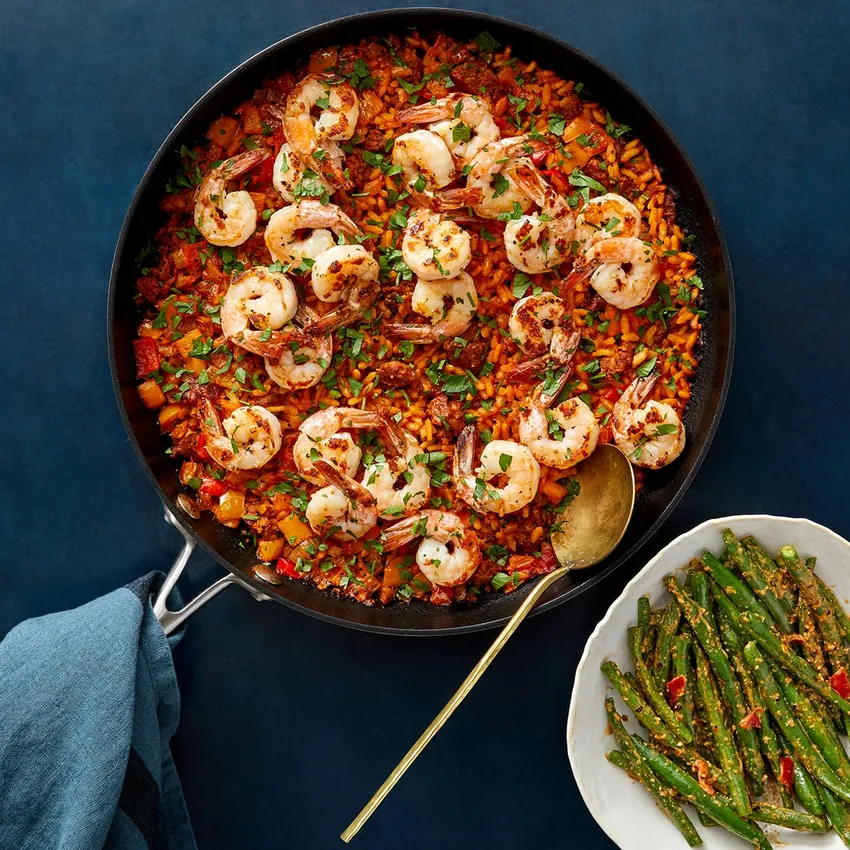

Skillet Grilled Seafood and Chorizo Paella

I made us a big skillet of awesomeness.
And I did it all in one pan without even heating up the kitchen.
SCORE!!
Although, now that I say that out loud I am silently thinking to myself that at least for me, up here in the mountains, its really not that hot out, like at all. Honestly, I wouldn’t mind heating up my kitchen right about now. I mean, I am highly embarrassed to admit this, but I totally have my heater blowing on my legs right now.
- 2 tablespoons olive oil
- 1/2 small sweet onion chopped
- cloves garlic minced or grated
- 4 ounces spanish chorizo sliced
- 3-4 heirloom tomatoes chopped (or one 14 ounce can whole peeled san marzano tomatoes
- 1 (8 ounce) jar roasted red peppers, sliced
- Preheat your grill to high heat.*
- Place a very large cast iron skillet (it should be at least a 12 inch circle or oval skillet) on the grill grates. Allow the skillet to heat with the grill. Once the skillet is hot, add the olive oil, onion and garlic. Season lightly with salt + pepper and cook about 3-5 minutes, stirring often or until the onion is soft and sweet. Add the chorizo and cook until just browned, about 2-3 minutes. Add the tomatoes (crushed by your hands if using canned), their juices and roasted red peppers. Continue cooking another 5 minutes.
- Add the wine to deglaze the pan and then stir in the rice, cooking until toasted, about 3-5 minutes. Slowly pour in the chicken broth and give everything a good stir. Slide in the chicken, green olives, paprika, another pinch of salt + pepper and a good pinch of saffron, stir gently to combine, cover tightly with the skillet top or tin foil and then place the lid on the grill. Grill covered for 15 minutes.
- Meanwhile, toss the seafood with a little olive oil, salt + pepper. After 15 minutes of cooking on the grill, carefully remove the skillet top or foil and add the seafood to the skillet. Cover again with the top or the foil and return the grill lid, continue cooking another 15 minutes or until the seafood is cooked through and the rice fluffy.
- Remove the skillet from the grill and drizzle the dish with lemon juice. If desired drizzle with white truffle oil as well and season lightly with salt + pepper. Garnish with fresh parsley. EAT!